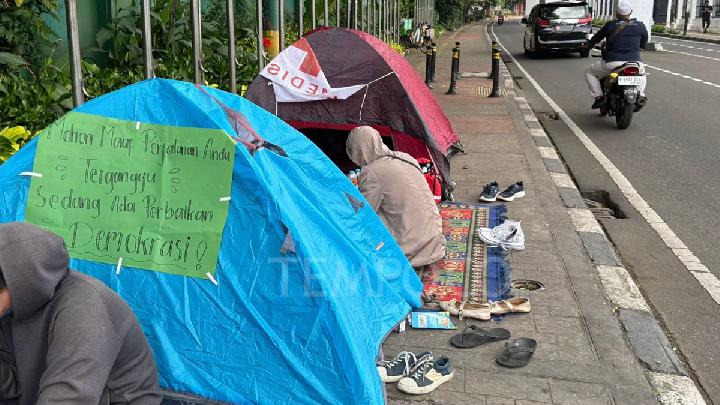
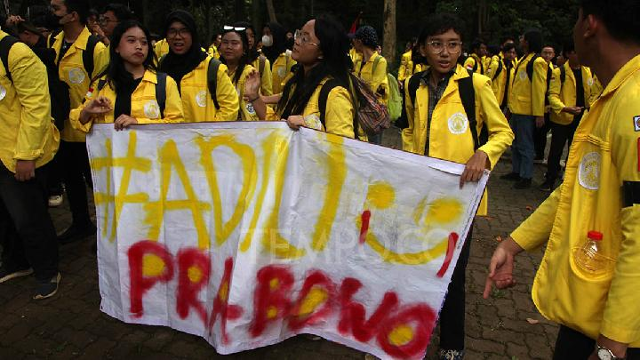

Berita Hari Ini

Aksi Kemah Tolak UU TNI di Gedung DPR Kembali Digelar
Baca Berita ...Unggul di Quick Count 5 Lembaga Survei, Pramono: Tunggu Finalnya
Baca Berita ...

IKM UI Gelar Konsolidasi Hari Ini, Bahas Pemangkasan Anggaran hingga Putusan Disertasi Bahlil
Baca Berita ...Usai Bank DKI, Pramono Pantau dan Evaluasi Seluruh BUMD Jakarta
Baca Berita ...


Tinjau Banjir Rob di Muara Angke, Pj Gubernur DKI Jakarta Salurkan Bantuan Bahan Pokok
Baca Berita ...